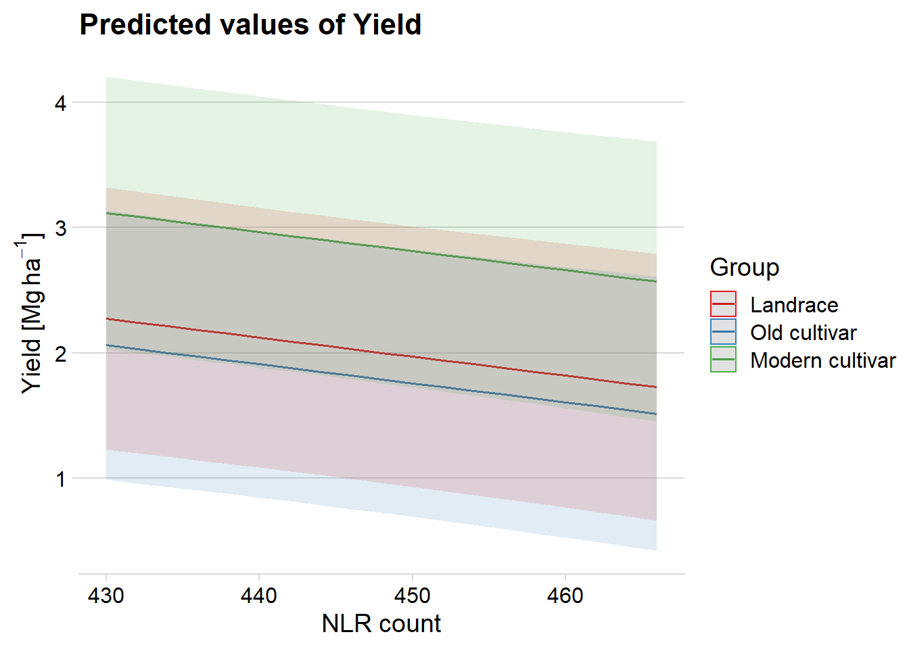
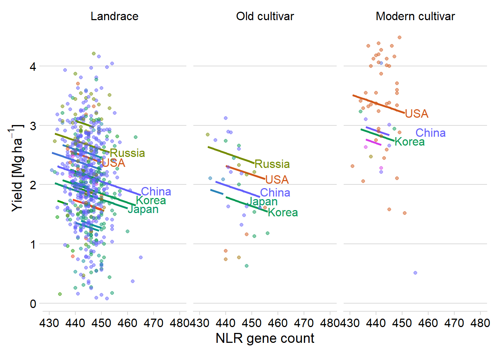
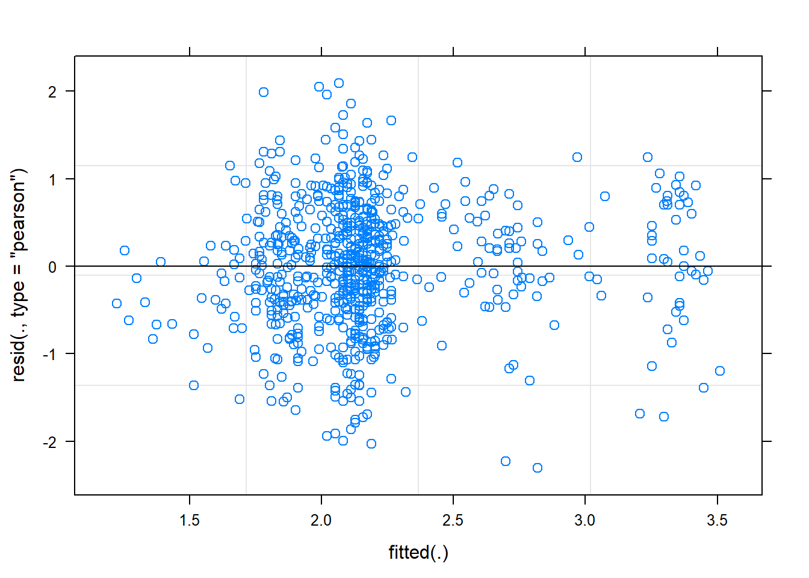
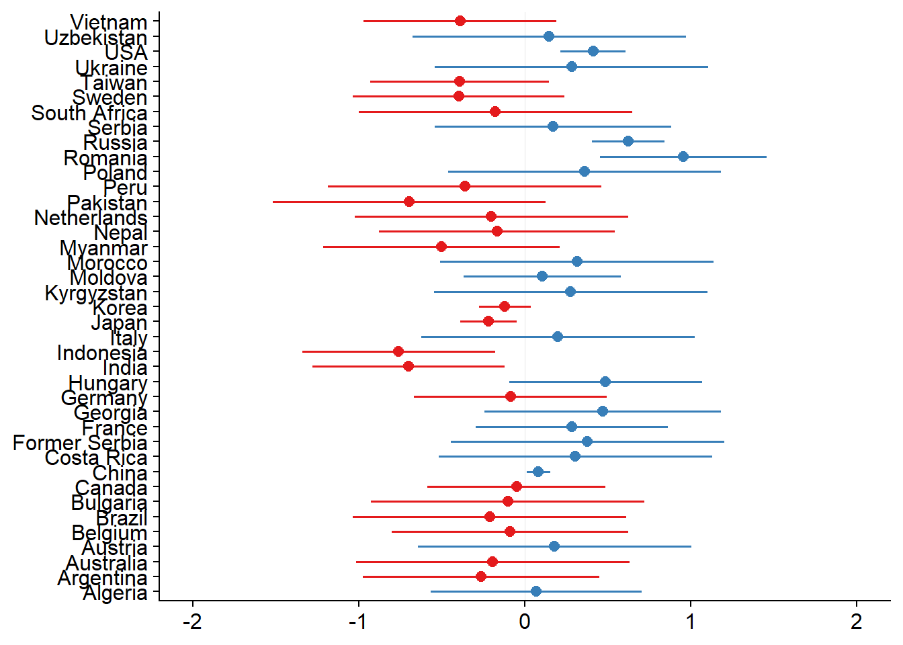
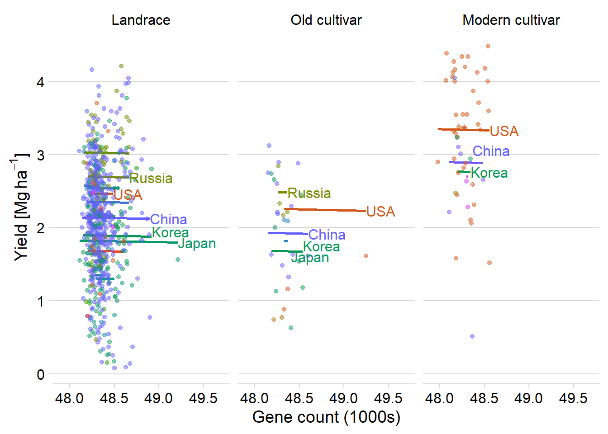
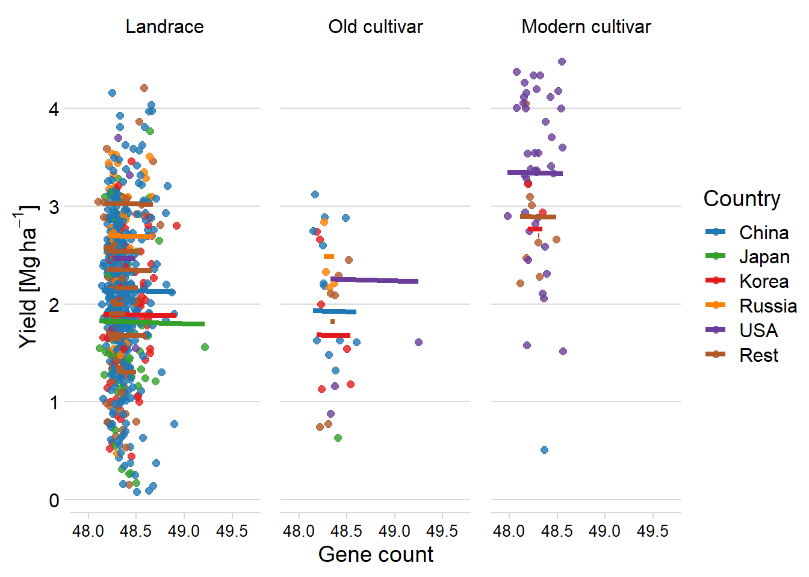
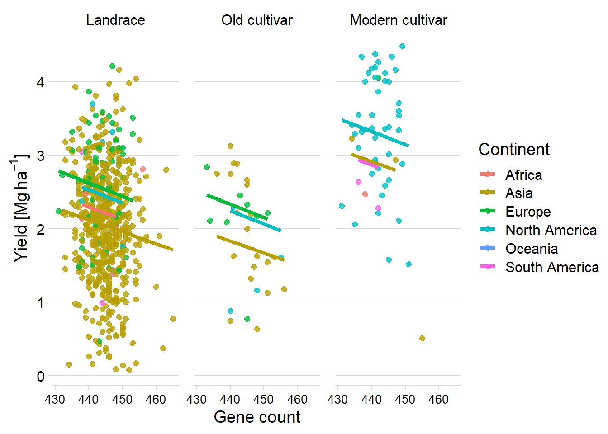

Linking yield with NLR PAV
Philipp Bayer
2020-09-22
Last updated: 2021-03-24
Checks: 7 0
Knit directory: R_gene_analysis/
This reproducible R Markdown analysis was created with workflowr (version 1.6.2.9000). The Checks tab describes the reproducibility checks that were applied when the results were created. The Past versions tab lists the development history.
Great! Since the R Markdown file has been committed to the Git repository, you know the exact version of the code that produced these results.
Great job! The global environment was empty. Objects defined in the global environment can affect the analysis in your R Markdown file in unknown ways. For reproduciblity it’s best to always run the code in an empty environment.
The command set.seed(20200917) was run prior to running the code in the R Markdown file. Setting a seed ensures that any results that rely on randomness, e.g. subsampling or permutations, are reproducible.
Great job! Recording the operating system, R version, and package versions is critical for reproducibility.
Nice! There were no cached chunks for this analysis, so you can be confident that you successfully produced the results during this run.
Great job! Using relative paths to the files within your workflowr project makes it easier to run your code on other machines.
Great! You are using Git for version control. Tracking code development and connecting the code version to the results is critical for reproducibility.
The results in this page were generated with repository version 2acd935. See the Past versions tab to see a history of the changes made to the R Markdown and HTML files.
Note that you need to be careful to ensure that all relevant files for the analysis have been committed to Git prior to generating the results (you can use wflow_publish or wflow_git_commit). workflowr only checks the R Markdown file, but you know if there are other scripts or data files that it depends on. Below is the status of the Git repository when the results were generated:
Ignored files:
Ignored: .Rhistory
Ignored: .Rproj.user/
Ignored: analysis/figure/
Untracked files:
Untracked: data/Brec_R1.txt
Untracked: data/Brec_R2.txt
Untracked: data/CR15_R1.txt
Untracked: data/CR15_R2.txt
Untracked: data/CR_14_R1.txt
Untracked: data/CR_14_R2.txt
Untracked: data/KS_R1.txt
Untracked: data/KS_R2.txt
Untracked: data/NBS_PAV.txt.gz
Untracked: data/NLR_PAV_GD.txt
Untracked: data/NLR_PAV_GM.txt
Untracked: data/PAVs_newick.txt
Untracked: data/PPR1.txt
Untracked: data/PPR2.txt
Untracked: data/SNPs_newick.txt
Untracked: data/bac.txt
Untracked: data/brown.txt
Untracked: data/cy3.txt
Untracked: data/cy5.txt
Untracked: data/early.txt
Untracked: data/flowerings.txt
Untracked: data/foregeye.txt
Untracked: data/height.txt
Untracked: data/late.txt
Untracked: data/mature.txt
Untracked: data/motting.txt
Untracked: data/mvp.kin.bin
Untracked: data/mvp.kin.desc
Untracked: data/oil.txt
Untracked: data/pdh.txt
Untracked: data/protein.txt
Untracked: data/rust_tan.txt
Untracked: data/salt.txt
Untracked: data/seedq.txt
Untracked: data/seedweight.txt
Untracked: data/stem_termination.txt
Untracked: data/sudden.txt
Untracked: data/virus.txt
Unstaged changes:
Modified: analysis/yield_lm_link.Rmd
Note that any generated files, e.g. HTML, png, CSS, etc., are not included in this status report because it is ok for generated content to have uncommitted changes.
These are the previous versions of the repository in which changes were made to the R Markdown (analysis/yield_link.Rmd) and HTML (docs/yield_link.html) files. If you’ve configured a remote Git repository (see ?wflow_git_remote), click on the hyperlinks in the table below to view the files as they were in that past version.
| File | Version | Author | Date | Message |
|---|---|---|---|---|
| Rmd | 2acd935 | Philipp Bayer | 2021-03-24 | Fix missing countries |
| html | 0961366 | Philipp Bayer | 2021-03-24 | Build site. |
| Rmd | e747dc6 | Philipp Bayer | 2021-03-24 | wflow_publish(files = c(“analysis/index.Rmd”, “analysis/yield_lm_link.Rmd”, |
| html | 8bcd145 | Philipp Bayer | 2021-03-09 | Build site. |
| Rmd | 3c54326 | Philipp Bayer | 2021-03-09 | wflow_publish(files = “analysis/yield_link.Rmd”) |
| Rmd | 2844fd3 | Philipp Bayer | 2021-02-09 | Add changes, add missing yield |
| html | 6f40d36 | Philipp Bayer | 2020-12-16 | Build site. |
| Rmd | a407cb3 | Philipp Bayer | 2020-12-16 | wflow_publish(“analysis/yield_link.Rmd”) |
| html | 3b4c387 | Philipp Bayer | 2020-12-16 | Build site. |
| Rmd | e8e89b1 | Philipp Bayer | 2020-12-16 | wflow_publish(“analysis/yield_link.Rmd”) |
| html | 0ccd24d | Philipp Bayer | 2020-12-16 | Build site. |
| Rmd | b1c1839 | Philipp Bayer | 2020-12-16 | wflow_publish(“analysis/yield_link.Rmd”) |
| html | 6df3f7b | Philipp Bayer | 2020-12-14 | Build site. |
| Rmd | b87834e | Philipp Bayer | 2020-12-14 | wflow_publish(“analysis/yield_link.Rmd”) |
| html | 25ba454 | Philipp Bayer | 2020-12-14 | Build site. |
| Rmd | c777575 | Philipp Bayer | 2020-12-14 | wflow_publish(“analysis/yield_link.Rmd”) |
| html | e519122 | Philipp Bayer | 2020-12-11 | Build site. |
| html | 364fc37 | Philipp Bayer | 2020-12-11 | Build site. |
| Rmd | 3935c51 | Philipp Bayer | 2020-12-11 | wflow_publish(c(“analysis/index.Rmd”, “analysis/yield_link.Rmd”)) |
| html | a33cd7c | Philipp Bayer | 2020-12-08 | Build site. |
| Rmd | 2eec51d | Philipp Bayer | 2020-12-08 | wflow_publish(“analysis/yield_link.Rmd”) |
| html | fa16e50 | Philipp Bayer | 2020-11-18 | Build site. |
| Rmd | 77b5633 | Philipp Bayer | 2020-11-18 | wflow_publish(“analysis/yield_link.Rmd”) |
| html | f0548a4 | Philipp Bayer | 2020-11-18 | Build site. |
| Rmd | 5b31dcc | Philipp Bayer | 2020-11-18 | wflow_publish(“analysis/yield_link.Rmd”) |
| html | 7fda2ed | Philipp Bayer | 2020-11-18 | Build site. |
| Rmd | 0e810db | Philipp Bayer | 2020-11-18 | More fixedp lots |
| html | 4ed2150 | Philipp Bayer | 2020-11-18 | Build site. |
| Rmd | f0de005 | Philipp Bayer | 2020-11-18 | PLots in one row now |
| html | e324223 | Philipp Bayer | 2020-11-18 | Build site. |
| Rmd | b8b60b1 | Philipp Bayer | 2020-11-18 | Add StrengeJacke plots |
| html | fb8bbfb | Philipp Bayer | 2020-11-18 | Build site. |
| Rmd | f0a5bdb | Philipp Bayer | 2020-11-18 | give me back my warnings |
| html | adbc058 | Philipp Bayer | 2020-11-18 | Build site. |
| Rmd | dc2aad4 | Philipp Bayer | 2020-11-18 | wflow_publish(“analysis/yield_link.Rmd”) |
| html | 359d849 | Philipp Bayer | 2020-11-18 | Build site. |
| Rmd | facd3e7 | Philipp Bayer | 2020-11-18 | wflow_publish(“analysis/yield_link.Rmd”) |
| html | e84338b | Philipp Bayer | 2020-11-18 | Build site. |
| Rmd | 2009819 | Philipp Bayer | 2020-11-18 | fixed lme4 syntax |
| html | 22a48ac | Philipp Bayer | 2020-11-18 | Build site. |
| Rmd | 92e2580 | Philipp Bayer | 2020-11-18 | fixed lme4 syntax |
| html | 262a76f | Philipp Bayer | 2020-11-05 | Build site. |
| Rmd | 69e9c29 | Philipp Bayer | 2020-11-05 | wflow_publish(“analysis/yield_link.Rmd”) |
| html | 5ddfe2b | Philipp Bayer | 2020-11-05 | Build site. |
| Rmd | 25f0f54 | Philipp Bayer | 2020-11-05 | wflow_publish(“analysis/yield_link.Rmd”) |
| html | fa5c0ff | Philipp Bayer | 2020-11-04 | Build site. |
| Rmd | 2d9c3db | Philipp Bayer | 2020-11-04 | wflow_publish(c(“analysis/index.Rmd”, “analysis/yield_link.Rmd”)) |
| html | f34dd48 | Philipp Bayer | 2020-11-02 | Build site. |
| Rmd | be2f299 | Philipp Bayer | 2020-11-02 | wflow_publish(“analysis/yield_link.Rmd”) |
| html | 58f8610 | Philipp Bayer | 2020-11-02 | Build site. |
| Rmd | 5166687 | Philipp Bayer | 2020-11-02 | wflow_publish(“analysis/yield_link.Rmd”) |
| Rmd | dae157b | Philipp Bayer | 2020-09-24 | Update of analysis |
| html | dae157b | Philipp Bayer | 2020-09-24 | Update of analysis |
knitr::opts_chunk$set(message = FALSE)
library(tidyverse)-- Attaching packages ------------------------------------------------------------------------------------------------------------------- tidyverse 1.3.0 --v ggplot2 3.3.2 v purrr 0.3.4
v tibble 3.0.2 v dplyr 1.0.0
v tidyr 1.1.0 v stringr 1.4.0
v readr 1.3.1 v forcats 0.5.0-- Conflicts ---------------------------------------------------------------------------------------------------------------------- tidyverse_conflicts() --
x dplyr::filter() masks stats::filter()
x dplyr::lag() masks stats::lag()library(patchwork)
library(sjPlot)Learn more about sjPlot with 'browseVignettes("sjPlot")'.library(ggsci)
library(dabestr)Loading required package: magrittr
Attaching package: 'magrittr'The following object is masked from 'package:purrr':
set_namesThe following object is masked from 'package:tidyr':
extractlibrary(dabestr)
library(cowplot)
********************************************************Note: As of version 1.0.0, cowplot does not change the default ggplot2 theme anymore. To recover the previous behavior, execute:
theme_set(theme_cowplot())********************************************************
Attaching package: 'cowplot'The following objects are masked from 'package:sjPlot':
plot_grid, save_plotThe following object is masked from 'package:patchwork':
align_plotslibrary(ggsignif)
library(ggforce)
library(lme4)Loading required package: Matrix
Attaching package: 'Matrix'The following objects are masked from 'package:tidyr':
expand, pack, unpacklibrary(directlabels)
library(lmerTest)
Attaching package: 'lmerTest'The following object is masked from 'package:lme4':
lmerThe following object is masked from 'package:stats':
steplibrary(dotwhisker)
library(pals)
theme_set(theme_cowplot())
library(RColorBrewer)
library(countrycode)Data loading
npg_col = pal_npg("nrc")(9)
col_list <- c(`Wild`=npg_col[8],
Landrace = npg_col[3],
`Old cultivar`=npg_col[2],
`Modern cultivar`=npg_col[4])
pav_table <- read_tsv('./data/soybean_pan_pav.matrix_gene.txt.gz')nbs <- read_tsv('./data/Lee.NBS.candidates.lst', col_names = c('Name', 'Class'))
nbs# A tibble: 486 x 2
Name Class
<chr> <chr>
1 UWASoyPan00953.t1 CN
2 GlymaLee.13G222900.1.p CN
3 GlymaLee.18G227000.1.p CN
4 GlymaLee.18G080600.1.p CN
5 GlymaLee.20G036200.1.p CN
6 UWASoyPan01876.t1 CN
7 UWASoyPan04211.t1 CN
8 GlymaLee.19G105400.1.p CN
9 GlymaLee.18G085100.1.p CN
10 GlymaLee.11G142600.1.p CN
# ... with 476 more rows# have to remove the .t1s
nbs$Name <- gsub('.t1','', nbs$Name)
nbs_pav_table <- pav_table %>% filter(Individual %in% nbs$Name)names <- c()
presences <- c()
for (i in seq_along(nbs_pav_table)){
if ( i == 1) next
thisind <- colnames(nbs_pav_table)[i]
pavs <- nbs_pav_table[[i]]
presents <- sum(pavs)
names <- c(names, thisind)
presences <- c(presences, presents)
}
nbs_res_tibb <- new_tibble(list(names = names, presences = presences))Warning: The `nrow` argument of `new_tibble()` can't be missing as of tibble 2.0.0.
`x` must be a scalar integer.
This warning is displayed once every 8 hours.
Call `lifecycle::last_warnings()` to see where this warning was generated.# let's make the same table for all genes too
names <- c()
presences <- c()
for (i in seq_along(pav_table)){
if ( i == 1) next
thisind <- colnames(pav_table)[i]
pavs <- pav_table[[i]]
presents <- sum(pavs)
names <- c(names, thisind)
presences <- c(presences, presents)
}
res_tibb <- new_tibble(list(names = names, presences = presences))groups <- read_csv('./data/Table_of_cultivar_groups.csv')
groups <- dplyr::rename(groups, Group = `Group in violin table`)
groups <- groups %>%
mutate(Group = str_replace_all(Group, 'landrace', 'Landrace')) %>%
mutate(Group = str_replace_all(Group, 'Old_cultivar', 'Old cultivar')) %>%
mutate(Group = str_replace_all(Group, 'Modern_cultivar', 'Modern cultivar')) %>%
mutate(Group = str_replace_all(Group, 'Wild-type', 'Wild'))
groups$Group <-
factor(
groups$Group,
levels = c('Wild',
'Landrace',
'Old cultivar',
'Modern cultivar')
)
groups# A tibble: 1,069 x 3
`Data-storage-ID` `PI-ID` Group
<chr> <chr> <fct>
1 SRR1533284 PI416890 Landrace
2 SRR1533282 PI323576 Landrace
3 SRR1533292 PI157421 Landrace
4 SRR1533216 PI594615 Landrace
5 SRR1533239 PI603336 Landrace
6 USB-108 PI165675 Landrace
7 HNEX-13 PI253665D Landrace
8 USB-382 PI603549 Landrace
9 SRR1533236 PI587552 Landrace
10 SRR1533332 PI567293 Landrace
# ... with 1,059 more rowsnbs_joined_groups <-
inner_join(nbs_res_tibb, groups, by = c('names' = 'Data-storage-ID'))
all_joined_groups <-
inner_join(res_tibb, groups, by = c('names' = 'Data-storage-ID'))Linking with yield
Can we link the trajectory of NLR genes with the trajectory of yield across the history of soybean breeding? let’s make a simple regression for now
Yield
yield <- read_tsv('./data/yield.txt')
yield_join <- inner_join(nbs_res_tibb, yield, by=c('names'='Line'))yield_join %>% ggplot(aes(x=presences, y=Yield)) + geom_hex() + geom_smooth() +
xlab('NLR gene count')
Protein
protein <- read_tsv('./data/protein_phenotype.txt')
protein_join <- left_join(nbs_res_tibb, protein, by=c('names'='Line')) %>% filter(!is.na(Protein))protein_join %>% ggplot(aes(x=presences, y=Protein)) + geom_hex() + geom_smooth() +
xlab('NLR gene count')
summary(lm(Protein ~ presences, data = protein_join))
Call:
lm(formula = Protein ~ presences, data = protein_join)
Residuals:
Min 1Q Median 3Q Max
-11.8479 -2.1274 -0.3336 1.9959 10.0949
Coefficients:
Estimate Std. Error t value Pr(>|t|)
(Intercept) -7.98158 7.24125 -1.102 0.271
presences 0.11786 0.01624 7.258 8.07e-13 ***
---
Signif. codes: 0 '***' 0.001 '**' 0.01 '*' 0.05 '.' 0.1 ' ' 1
Residual standard error: 3.106 on 960 degrees of freedom
Multiple R-squared: 0.05203, Adjusted R-squared: 0.05104
F-statistic: 52.69 on 1 and 960 DF, p-value: 8.075e-13Seed weight
Let’s look at seed weight:
seed_weight <- read_tsv('./data/Seed_weight_Phenotype.txt', col_names = c('names', 'wt'))
seed_join <- left_join(nbs_res_tibb, seed_weight) %>% filter(!is.na(wt))seed_join %>% filter(wt > 5) %>% ggplot(aes(x=presences, y=wt)) + geom_hex() + geom_smooth() +
ylab('Seed weight') +
xlab('NLR gene count')
summary(lm(wt ~ presences, data = seed_join))
Call:
lm(formula = wt ~ presences, data = seed_join)
Residuals:
Min 1Q Median 3Q Max
-12.2910 -2.8692 0.1462 2.7771 19.6962
Coefficients:
Estimate Std. Error t value Pr(>|t|)
(Intercept) 91.40656 14.67990 6.227 8.28e-10 ***
presences -0.17636 0.03298 -5.348 1.21e-07 ***
---
Signif. codes: 0 '***' 0.001 '**' 0.01 '*' 0.05 '.' 0.1 ' ' 1
Residual standard error: 4.714 on 690 degrees of freedom
Multiple R-squared: 0.0398, Adjusted R-squared: 0.0384
F-statistic: 28.6 on 1 and 690 DF, p-value: 1.213e-07Oil content
And now let’s look at the oil phenotype:
oil <- read_tsv('./data/oil_phenotype.txt')
oil_join <- left_join(nbs_res_tibb, oil, by=c('names'='Line')) %>% filter(!is.na(Oil))
oil_join# A tibble: 962 x 3
names presences Oil
<chr> <dbl> <dbl>
1 AB-01 445 17.6
2 AB-02 454 16.8
3 BR-24 455 20.6
4 ESS 454 20.9
5 For 448 21
6 HN001 448 23.6
7 HN002 444 18.5
8 HN003 446 17.5
9 HN004 442 18.9
10 HN005 440 15.5
# ... with 952 more rowsoil_join %>% ggplot(aes(x=presences, y=Oil)) + geom_hex() + geom_smooth() +
xlab('NLR gene count')
summary(lm(Oil ~ presences, data = oil_join))
Call:
lm(formula = Oil ~ presences, data = oil_join)
Residuals:
Min 1Q Median 3Q Max
-10.4376 -1.9081 0.4846 2.2401 9.0361
Coefficients:
Estimate Std. Error t value Pr(>|t|)
(Intercept) 118.03941 7.31646 16.13 <2e-16 ***
presences -0.22591 0.01641 -13.77 <2e-16 ***
---
Signif. codes: 0 '***' 0.001 '**' 0.01 '*' 0.05 '.' 0.1 ' ' 1
Residual standard error: 3.139 on 960 degrees of freedom
Multiple R-squared: 0.1649, Adjusted R-squared: 0.1641
F-statistic: 189.6 on 1 and 960 DF, p-value: < 2.2e-16OK there are many, many outliers here. Clearly I’ll have to do something fancier - for example, using the first two PCs as covariates might get rid of some of those outliers.
Boxplots per group
Yield
nbs_joined_groups %>%
filter(!is.na(Group)) %>%
inner_join(yield, by=c('names'='Line')) %>%
ggplot(aes(x=Group, y=Yield, fill = Group)) +
geom_boxplot() +
scale_fill_manual(values = col_list) +
theme_minimal_hgrid() +
theme(axis.text.x = element_text(size=12),
axis.text.y = element_text(size=12)) +
geom_signif(comparisons = list(c('Old cultivar', 'Modern cultivar')),
map_signif_level = T) +
guides(fill=FALSE) +
ylab('Yield') +
xlab('Accession group')
And let’s check the dots:
nbs_joined_groups %>%
filter(!is.na(Group)) %>%
inner_join(yield_join, by = 'names') %>%
ggplot(aes(y=presences.x, x=Yield, color=Group)) +
geom_point() +
scale_color_manual(values = col_list) +
theme_minimal_hgrid() +
theme(axis.text.x = element_text(size=12),
axis.text.y = element_text(size=12)) +
ylab('NLR gene count')
nbs_joined_groups %>%
filter(!is.na(Group)) %>%
inner_join(yield_join, by = 'names') %>%
filter(Group != 'Landrace') %>%
ggplot(aes(x=presences.x, y=Yield, color=Group)) +
geom_point() +
scale_color_manual(values = col_list) +
theme_minimal_hgrid() +
geom_smooth() +
theme(axis.text.x = element_text(size=12),
axis.text.y = element_text(size=12)) +
xlab('NLR gene count') ## Protein
## Protein
protein vs. the four groups:
nbs_joined_groups %>%
filter(!is.na(Group)) %>%
inner_join(protein, by=c('names'='Line')) %>%
ggplot(aes(x=Group, y=Protein, fill = Group)) +
geom_boxplot() +
scale_fill_manual(values = col_list) +
theme_minimal_hgrid() +
theme(axis.text.x = element_text(size=12),
axis.text.y = element_text(size=12)) +
geom_signif(comparisons = list(c('Wild', 'Landrace'),
c('Old cultivar', 'Modern cultivar')),
map_signif_level = T) +
guides(fill=FALSE) +
ylab('Protein') +
xlab('Accession group')
Seed weight
And seed weight:
nbs_joined_groups %>%
filter(!is.na(Group)) %>%
inner_join(seed_join) %>%
ggplot(aes(x=Group, y=wt, fill = Group)) +
geom_boxplot() +
scale_fill_manual(values = col_list) +
theme_minimal_hgrid() +
theme(axis.text.x = element_text(size=12),
axis.text.y = element_text(size=12)) +
geom_signif(comparisons = list(c('Wild', 'Landrace'),
c('Old cultivar', 'Modern cultivar')),
map_signif_level = T) +
guides(fill=FALSE) +
ylab('Seed weight') +
xlab('Accession group')
Wow, that’s breeding!
Oil content
And finally, Oil content:
nbs_joined_groups %>%
filter(!is.na(Group)) %>%
inner_join(oil_join, by = 'names') %>%
ggplot(aes(x=Group, y=Oil, fill = Group)) +
geom_boxplot() +
scale_fill_manual(values = col_list) +
theme_minimal_hgrid() +
theme(axis.text.x = element_text(size=12),
axis.text.y = element_text(size=12)) +
geom_signif(comparisons = list(c('Wild', 'Landrace'),
c('Old cultivar', 'Modern cultivar')),
map_signif_level = T) +
guides(fill=FALSE) +
ylab('Oil content') +
xlab('Accession group')
Oha, a single star. That’s p < 0.05!
Let’s redo the above hexplot, but also color the dots by group.
nbs_joined_groups %>%
filter(!is.na(Group)) %>%
inner_join(oil_join, by = 'names') %>%
ggplot(aes(x=presences.x, y=Oil, color=Group)) +
geom_point() +
scale_color_manual(values = col_list) +
theme_minimal_hgrid() +
theme(axis.text.x = element_text(size=12),
axis.text.y = element_text(size=12)) +
xlab('NLR gene count')
Oha, so it’s the Wilds that drag this out a lot.
Let’s remove them and see what it looks like:
nbs_joined_groups %>%
filter(!is.na(Group)) %>%
inner_join(oil_join, by = 'names') %>%
filter(Group %in% c('Old cultivar', 'Modern cultivar')) %>%
ggplot(aes(x=presences.x, y=Oil, color=Group)) +
geom_point() +
scale_color_manual(values = col_list) +
theme_minimal_hgrid() +
theme(axis.text.x = element_text(size=12),
axis.text.y = element_text(size=12)) +
xlab('NLR gene count') +
geom_smooth()
Let’s remove that one outlier:
nbs_joined_groups %>%
filter(!is.na(Group)) %>%
inner_join(oil_join, by = 'names') %>%
filter(Group %in% c('Old cultivar', 'Modern cultivar')) %>%
filter(Oil > 13) %>%
ggplot(aes(x=presences.x, y=Oil, color=Group)) +
geom_point() +
scale_color_manual(values = col_list) +
theme_minimal_hgrid() +
theme(axis.text.x = element_text(size=12),
axis.text.y = element_text(size=12)) +
xlab('NLR gene count') +
geom_smooth()
Does the above oil content boxplot become different if we exclude the one outlier? I’d bet so
nbs_joined_groups %>%
filter(!is.na(Group)) %>%
inner_join(oil_join, by = 'names') %>%
filter(names != 'USB-393') %>%
ggplot(aes(x=Group, y=Oil, fill = Group)) +
geom_boxplot() +
scale_fill_manual(values = col_list) +
theme_minimal_hgrid() +
theme(axis.text.x = element_text(size=12),
axis.text.y = element_text(size=12)) +
geom_signif(comparisons = list(c('Wild', 'Landrace'),
c('Old cultivar', 'Modern cultivar')),
map_signif_level = T) +
guides(fill=FALSE) +
ylab('Oil content') +
xlab('Accession group')
Nope, still significantly higher in modern cultivars!
Mixed modeling
Alright here’s my hypothesis: There’s a link between cultivar status (Old, Wild, Landrace, Modern), r-gene count, and yield, but it’s ‘hidden’ by country differences.
Great tutorial here: https://ourcodingclub.github.io/tutorials/mixed-models
So we’ll have to build some lme4 models!
Normalising NLR gene counts
nbs_joined_groups$presences2 <- scale(nbs_joined_groups$presences, center=T, scale=T)
hist(nbs_joined_groups$presences2)
Oil
oil_nbs_joined_groups <- nbs_joined_groups %>% inner_join(oil_join, by = 'names')
oil_nbs_joined_groups$Oil2 <- scale(oil_nbs_joined_groups$Oil, center=T, scale=T)basic.lm <- lm(Oil2 ~ presences2, data=oil_nbs_joined_groups)ggplot(oil_nbs_joined_groups, aes(x = presences2, y = Oil2)) +
geom_point() +
geom_smooth(method = "lm")
Hm looks messy, you can see two groups
plot(basic.lm, which = 1)
which is confirmed by the messy line
plot(basic.lm, which = 2)
and this garbage qqplot.
So let’s build an lmer model!
mixed.lmer <- lmer(Oil2 ~ presences2 + (1|Group), data=oil_nbs_joined_groups)
summary(mixed.lmer)Linear mixed model fit by REML. t-tests use Satterthwaite's method [
lmerModLmerTest]
Formula: Oil2 ~ presences2 + (1 | Group)
Data: oil_nbs_joined_groups
REML criterion at convergence: 1872.4
Scaled residuals:
Min 1Q Median 3Q Max
-4.5879 -0.5672 0.0869 0.6631 3.2111
Random effects:
Groups Name Variance Std.Dev.
Group (Intercept) 1.3349 1.1554
Residual 0.4075 0.6384
Number of obs: 951, groups: Group, 4
Fixed effects:
Estimate Std. Error df t value Pr(>|t|)
(Intercept) -0.04360 0.57867 2.99844 -0.075 0.9447
presences2 -0.05350 0.02394 947.27006 -2.234 0.0257 *
---
Signif. codes: 0 '***' 0.001 '**' 0.01 '*' 0.05 '.' 0.1 ' ' 1
Correlation of Fixed Effects:
(Intr)
presences2 -0.004So the Variance for Group is 1.3349, that means it’s 1.3349/(1.3349+0.4075) *100 = 76% of the variance is explained by the four groups!
plot(mixed.lmer)
qqnorm(resid(mixed.lmer))
qqline(resid(mixed.lmer))
These still look fairly bad - better than before, but the QQ plot still isn’t on the line.
Let’s quickly check yield too
Yield
yield_nbs_joined_groups <- nbs_joined_groups %>% inner_join(yield_join, by = 'names')
yield_nbs_joined_groups$Yield2 <-scale(yield_nbs_joined_groups$Yield, center=T, scale=T)
yield_all_joined_groups <- all_joined_groups %>% inner_join(yield_join, by = 'names')mixed.lmer <- lmer(Yield2 ~ presences2 + (1|Group), data=yield_nbs_joined_groups)
summary(mixed.lmer)Linear mixed model fit by REML. t-tests use Satterthwaite's method [
lmerModLmerTest]
Formula: Yield2 ~ presences2 + (1 | Group)
Data: yield_nbs_joined_groups
REML criterion at convergence: 2060.4
Scaled residuals:
Min 1Q Median 3Q Max
-3.1643 -0.6819 0.0316 0.6948 2.8002
Random effects:
Groups Name Variance Std.Dev.
Group (Intercept) 0.6466 0.8041
Residual 0.8600 0.9274
Number of obs: 761, groups: Group, 3
Fixed effects:
Estimate Std. Error df t value Pr(>|t|)
(Intercept) 0.23641 0.46910 1.98335 0.504 0.664692
presences2 -0.15364 0.04172 757.46580 -3.683 0.000247 ***
---
Signif. codes: 0 '***' 0.001 '**' 0.01 '*' 0.05 '.' 0.1 ' ' 1
Correlation of Fixed Effects:
(Intr)
presences2 0.025 Percentage explained by breeding group: 0.6466 / (0.6466+0.8600)*100 = 42%
plot(mixed.lmer)
qqnorm(resid(mixed.lmer))
qqline(resid(mixed.lmer))
:O
p-value of 0.000247 for the normalised presences while accounting for the breeding group, that’s beautiful.
ggplot(yield_nbs_joined_groups, aes(x = presences2, y = Yield2)) +
facet_wrap(~Group, nrow=1) + # a panel for each mountain range
geom_point(alpha = 0.5) +
theme_classic() +
geom_line(data = cbind(yield_nbs_joined_groups, pred = predict(mixed.lmer)), aes(y = pred), size = 1) +
theme_minimal_hgrid() +
theme(legend.position = "none") +
xlab('Scaled and centered NLR gene count') +
ylab('Scaled and centered yield') +
scale_color_manual(values=as.vector(isol(40)))
Making the breeding group fixed
We have < 10 possible factors in the group, so making that fixed instead of random
# this doesn't work because you need at least one random effect
# mixed.lmer <- lmer(Yield2 ~ presences2 + Group, data=yield_nbs_joined_groups)Adding country
We should also add the country the plant is from as a random effect, that definitely has an influence too (perhaps a stronger one???)
Yield
country <- read_csv('./data/Cultivar_vs_country.csv')
names(country) <- c('names', 'PI-ID', 'Country')
# fix weird ND issue
country <- country %>% mutate(Country = na_if(Country, 'ND')) %>%
mutate(Country = str_replace_all(Country, 'Costa', 'Costa Rica'))
yield_country_nbs_joined_groups <- yield_nbs_joined_groups %>% inner_join(country)
yield_country_all_joined_groups <- yield_all_joined_groups %>% inner_join(country)
yield_country_nbs_joined_groups <- yield_country_nbs_joined_groups %>% filter(!is.na(Country))I need a summary table of sample sizes:
table(yield_country_nbs_joined_groups$Group)
Wild Landrace Old cultivar Modern cultivar
0 647 32 52 And a summary histogram:
yield_country_nbs_joined_groups %>% ggplot(aes(x=presences.x, fill=Group)) +
geom_histogram(bins=25) +
xlab(expression(paste('Yield [Mg ', ha^-1, ']'))) +
ylab('Count') +
facet_wrap(~Group) +
scale_fill_manual(values = col_list) +
theme(legend.position = "none")
mixed.lmer <- lmer(Yield2 ~ presences2 + (1|Group) + (1|Country), data=yield_country_nbs_joined_groups)
summary(mixed.lmer)Linear mixed model fit by REML. t-tests use Satterthwaite's method [
lmerModLmerTest]
Formula: Yield2 ~ presences2 + (1 | Group) + (1 | Country)
Data: yield_country_nbs_joined_groups
REML criterion at convergence: 1932.6
Scaled residuals:
Min 1Q Median 3Q Max
-3.0981 -0.5670 0.0323 0.6579 2.8969
Random effects:
Groups Name Variance Std.Dev.
Country (Intercept) 0.3933 0.6271
Group (Intercept) 0.4073 0.6382
Residual 0.7641 0.8742
Number of obs: 731, groups: Country, 39; Group, 3
Fixed effects:
Estimate Std. Error df t value Pr(>|t|)
(Intercept) 0.06512 0.39898 2.32035 0.163 0.88348
presences2 -0.11355 0.04164 717.87586 -2.727 0.00655 **
---
Signif. codes: 0 '***' 0.001 '**' 0.01 '*' 0.05 '.' 0.1 ' ' 1
Correlation of Fixed Effects:
(Intr)
presences2 0.053 Nice! Yield is negatively correlated with the number of NLR genes when accounting for breeding group AND country
ggplot(yield_country_nbs_joined_groups, aes(x = presences2, y = Yield2, colour = Country)) +
facet_wrap(~Group, nrow=1) + # a panel for each mountain range
geom_point(alpha = 0.5) +
theme_classic() +
geom_line(data = cbind(yield_country_nbs_joined_groups, pred = predict(mixed.lmer)), aes(y = pred), size = 1) +
theme_minimal_hgrid() +
theme(legend.position = "none") +
xlab('Scaled and centered NLR gene count') +
ylab('Scaled and centered yield') +
scale_color_manual(values=as.vector(isol(40)))
Some diagnostics:
plot(mixed.lmer)
qqnorm(resid(mixed.lmer))
qqline(resid(mixed.lmer))
Hm, the qqplot looks slightly worse than when I use maturity group alone, interesting!
BIG DISCLAIMER: Currently, I treat country and group not as nested variables, they’re independent. I think that is the way it should be in this case but I’m thinking.
Making the breeding group fixed
Since we have too few factors in the breeding groups we have to make that fixed, not random
mixed.lmer <- lmer(Yield2 ~ presences2 + Group + (1|Country), data=yield_country_nbs_joined_groups)
summary(mixed.lmer)Linear mixed model fit by REML. t-tests use Satterthwaite's method [
lmerModLmerTest]
Formula: Yield2 ~ presences2 + Group + (1 | Country)
Data: yield_country_nbs_joined_groups
REML criterion at convergence: 1927.5
Scaled residuals:
Min 1Q Median 3Q Max
-3.1926 -0.5668 0.0301 0.6558 2.8953
Random effects:
Groups Name Variance Std.Dev.
Country (Intercept) 0.3896 0.6242
Residual 0.7643 0.8742
Number of obs: 731, groups: Country, 39
Fixed effects:
Estimate Std. Error df t value Pr(>|t|)
(Intercept) -0.17634 0.13898 32.85080 -1.269 0.21342
presences2 -0.11247 0.04165 717.37290 -2.700 0.00709 **
GroupOld cultivar -0.25675 0.16454 725.56568 -1.560 0.11909
GroupModern cultivar 1.01794 0.22451 358.73206 4.534 7.9e-06 ***
---
Signif. codes: 0 '***' 0.001 '**' 0.01 '*' 0.05 '.' 0.1 ' ' 1
Correlation of Fixed Effects:
(Intr) prsnc2 GrpOlc
presences2 0.118
GrpOldcltvr -0.109 0.002
GrpMdrncltv -0.196 0.067 0.160Non-normalised yield
Let’s see whether the ‘raw’ values perform the same.
mixed.lmer <- lmer(Yield ~ presences.x + (1|Group) + (1|Country), data=yield_country_nbs_joined_groups)
summary(mixed.lmer)Linear mixed model fit by REML. t-tests use Satterthwaite's method [
lmerModLmerTest]
Formula: Yield ~ presences.x + (1 | Group) + (1 | Country)
Data: yield_country_nbs_joined_groups
REML criterion at convergence: 1659
Scaled residuals:
Min 1Q Median 3Q Max
-3.0981 -0.5670 0.0323 0.6579 2.8969
Random effects:
Groups Name Variance Std.Dev.
Country (Intercept) 0.2689 0.5185
Group (Intercept) 0.2785 0.5277
Residual 0.5224 0.7228
Number of obs: 731, groups: Country, 39; Group, 3
Fixed effects:
Estimate Std. Error df t value Pr(>|t|)
(Intercept) 9.063853 2.508738 674.984753 3.613 0.000325 ***
presences.x -0.015323 0.005619 717.875800 -2.727 0.006551 **
---
Signif. codes: 0 '***' 0.001 '**' 0.01 '*' 0.05 '.' 0.1 ' ' 1
Correlation of Fixed Effects:
(Intr)
presences.x -0.991Oh, lower p-values for the intercept
ggplot(yield_country_nbs_joined_groups, aes(x = presences.x, y = Yield, colour = Country)) +
facet_wrap(~Group, nrow=1) + # a panel for each mountain range
geom_point(alpha = 0.5) +
theme_classic() +
geom_line(data = cbind(yield_country_nbs_joined_groups, pred = predict(mixed.lmer)), aes(y = pred), size = 1) +
theme_minimal_hgrid() +
theme(legend.position = "none") +
xlab('NLR gene count') +
xlab(expression(paste('Yield [Mg ', ha^-1, ']'))) +
scale_color_manual(values=as.vector(isol(40)))plot(mixed.lmer)
qqnorm(resid(mixed.lmer))
qqline(resid(mixed.lmer))Making the breeding group fixed
mixed.lmer <- lmer(Yield ~ presences.x + Group + (1|Country), data=yield_country_nbs_joined_groups)
summary(mixed.lmer)Linear mixed model fit by REML. t-tests use Satterthwaite's method [
lmerModLmerTest]
Formula: Yield ~ presences.x + Group + (1 | Country)
Data: yield_country_nbs_joined_groups
REML criterion at convergence: 1654.6
Scaled residuals:
Min 1Q Median 3Q Max
-3.1926 -0.5668 0.0301 0.6558 2.8953
Random effects:
Groups Name Variance Std.Dev.
Country (Intercept) 0.2664 0.5161
Residual 0.5225 0.7228
Number of obs: 731, groups: Country, 39
Fixed effects:
Estimate Std. Error df t value Pr(>|t|)
(Intercept) 8.79940 2.49420 717.62527 3.528 0.000445 ***
presences.x -0.01518 0.00562 717.37258 -2.700 0.007089 **
GroupOld cultivar -0.21229 0.13604 725.56568 -1.560 0.119092
GroupModern cultivar 0.84166 0.18563 358.73206 4.534 7.9e-06 ***
---
Signif. codes: 0 '***' 0.001 '**' 0.01 '*' 0.05 '.' 0.1 ' ' 1
Correlation of Fixed Effects:
(Intr) prsnc. GrpOlc
presences.x -0.999
GrpOldcltvr -0.007 0.002
GrpMdrncltv -0.076 0.067 0.160Oh, lower p-values for the intercept
ggplot(yield_country_nbs_joined_groups, aes(x = presences.x, y = Yield, colour = Country)) +
facet_wrap(~Group, nrow=1) + # a panel for each mountain range
geom_point(alpha = 0.5) +
theme_classic() +
geom_line(data = cbind(yield_country_nbs_joined_groups, pred = predict(mixed.lmer)), aes(y = pred), size = 1) +
theme_minimal_hgrid() +
theme(legend.position = "none") +
xlab('NLR gene count') +
xlab(expression(paste('Yield [Mg ', ha^-1, ']'))) +
scale_color_manual(values=as.vector(isol(40)))plot(mixed.lmer)
qqnorm(resid(mixed.lmer))
qqline(resid(mixed.lmer))
plot(resid(mixed.lmer))
These are the final numbers for the paper.
Plotting effect of each covariate
(re.effects <- plot_model(mixed.lmer, type = "re", show.values = TRUE))
#lmerTest breaks these other packages so I better unload it and reload only lme4
detach("package:lmerTest", unload=TRUE)
yield_country_nbs_joined_groups_renamed <- yield_country_nbs_joined_groups
names(yield_country_nbs_joined_groups_renamed) <- c('names', 'presences.x', 'PI-ID', 'Group', 'presences2', 'presences.y', 'Yield', 'Yield2', 'Country')
mixed.lmer <- lmer(Yield2 ~ presences2 + Group + (1|Country), data=yield_country_nbs_joined_groups_renamed)
dwplot(mixed.lmer,
vline = geom_vline(xintercept = 0, colour = "grey60", linetype = 2))
library(stargazer)
stargazer(mixed.lmer, type = "text",
digits = 3,
star.cutoffs = c(0.05, 0.01, 0.001),
digit.separator = "")
==================================================
Dependent variable:
-----------------------------
Yield2
--------------------------------------------------
presences2 -0.112**
(0.042)
GroupOld cultivar -0.257
(0.165)
GroupModern cultivar 1.018***
(0.225)
Constant -0.176
(0.139)
--------------------------------------------------
Observations 731
Log Likelihood -963.726
Akaike Inf. Crit. 1939.452
Bayesian Inf. Crit. 1967.018
==================================================
Note: *p<0.05; **p<0.01; ***p<0.001library(ggeffects)
ggpredict(mixed.lmer, terms = c("presences2", 'Group'), type = "re") %>%
plot() +
theme_minimal() Let’s also plot that for non-normalised data
Let’s also plot that for non-normalised data
mixed.lmer <- lmer(Yield ~ presences.x + Group + (1|Country), data=yield_country_nbs_joined_groups_renamed)
ggpredict(mixed.lmer, terms = c("presences.x", 'Group'), type = "re") %>%
plot() +
theme_minimal_hgrid() +
xlab('NLR count') +
ylab(expression(paste('Yield [Mg ', ha^-1, ']')))
# alright back to regular programming
library(lmerTest)More complex models
If I add random slopes to either groups not much changes, I do get warnings indicating that there’s not much in the data:
mixed.lmer <- lmer(Yield2 ~ presences2 + (presences2|Group) + (1|Country), data=yield_country_nbs_joined_groups)
summary(mixed.lmer)Linear mixed model fit by REML. t-tests use Satterthwaite's method [
lmerModLmerTest]
Formula: Yield2 ~ presences2 + (presences2 | Group) + (1 | Country)
Data: yield_country_nbs_joined_groups
REML criterion at convergence: 1931.1
Scaled residuals:
Min 1Q Median 3Q Max
-3.0864 -0.5632 0.0365 0.6690 2.8868
Random effects:
Groups Name Variance Std.Dev. Corr
Country (Intercept) 0.40163 0.6337
Group (Intercept) 0.37620 0.6134
presences2 0.02385 0.1544 0.19
Residual 0.76027 0.8719
Number of obs: 731, groups: Country, 39; Group, 3
Fixed effects:
Estimate Std. Error df t value Pr(>|t|)
(Intercept) 0.02492 0.38687 2.32174 0.064 0.954
presences2 -0.21230 0.11320 1.52477 -1.875 0.239
Correlation of Fixed Effects:
(Intr)
presences2 0.192 mixed.lmer <- lmer(Yield2 ~ presences2 + Group + (1 + presences2|Country), data=yield_country_nbs_joined_groups)
summary(mixed.lmer)Linear mixed model fit by REML. t-tests use Satterthwaite's method [
lmerModLmerTest]
Formula: Yield2 ~ presences2 + Group + (1 + presences2 | Country)
Data: yield_country_nbs_joined_groups
REML criterion at convergence: 1927.2
Scaled residuals:
Min 1Q Median 3Q Max
-3.1976 -0.5665 0.0342 0.6551 2.8969
Random effects:
Groups Name Variance Std.Dev. Corr
Country (Intercept) 0.410709 0.6409
presences2 0.002071 0.0455 1.00
Residual 0.764200 0.8742
Number of obs: 731, groups: Country, 39
Fixed effects:
Estimate Std. Error df t value Pr(>|t|)
(Intercept) -0.17128 0.14299 27.57110 -1.198 0.2412
presences2 -0.11807 0.04348 28.82197 -2.716 0.0111 *
GroupOld cultivar -0.26105 0.16440 722.93518 -1.588 0.1127
GroupModern cultivar 1.02238 0.22051 166.35558 4.636 7.14e-06 ***
---
Signif. codes: 0 '***' 0.001 '**' 0.01 '*' 0.05 '.' 0.1 ' ' 1
Correlation of Fixed Effects:
(Intr) prsnc2 GrpOlc
presences2 0.331
GrpOldcltvr -0.106 -0.007
GrpMdrncltv -0.190 0.045 0.162
convergence code: 0
boundary (singular) fit: see ?isSingularOh, a significant p-value, let’s plot plot that and compare with he previous plot:
ggplot(yield_country_nbs_joined_groups, aes(x = presences2, y = Yield2, colour = Country)) +
facet_wrap(~Group, nrow=1) + # a panel for each mountain range
geom_point(alpha = 0.5) +
theme_classic() +
geom_line(data = cbind(yield_country_nbs_joined_groups, pred = predict(mixed.lmer)), aes(y = pred), size = 1) +
theme_minimal_hgrid() +
theme(legend.position = "none") +
xlab('Scaled and centered NLR gene count') +
ylab('Scaled and centered yield') +
scale_color_manual(values=as.vector(isol(40))) Quite similar, mostly downwards trajectories for each country.
Quite similar, mostly downwards trajectories for each country.
Let’s do that non-normalised:
mixed.lmer <- lmer(Yield ~ presences.x + Group + (1 + presences.x|Country), data=yield_country_nbs_joined_groups)Warning in checkConv(attr(opt, "derivs"), opt$par, ctrl = control$checkConv, :
unable to evaluate scaled gradientWarning in checkConv(attr(opt, "derivs"), opt$par, ctrl = control$checkConv, :
Model failed to converge: degenerate Hessian with 1 negative eigenvaluesWarning: Model failed to converge with 1 negative eigenvalue: -2.1e+04summary(mixed.lmer)Linear mixed model fit by REML. t-tests use Satterthwaite's method [
lmerModLmerTest]
Formula: Yield ~ presences.x + Group + (1 + presences.x | Country)
Data: yield_country_nbs_joined_groups
REML criterion at convergence: 1654.6
Scaled residuals:
Min 1Q Median 3Q Max
-3.1925 -0.5650 0.0320 0.6556 2.8956
Random effects:
Groups Name Variance Std.Dev. Corr
Country (Intercept) 5.209e-01 0.7217082
presences.x 2.229e-07 0.0004722 -0.98
Residual 5.224e-01 0.7227494
Number of obs: 731, groups: Country, 39
Fixed effects:
Estimate Std. Error df t value Pr(>|t|)
(Intercept) 8.773259 2.493463 657.098008 3.519 0.000464 ***
presences.x -0.015119 0.005614 344.051782 -2.693 0.007428 **
GroupOld cultivar -0.211992 0.136048 723.215294 -1.558 0.119619
GroupModern cultivar 0.841339 0.185955 221.808564 4.524 9.87e-06 ***
---
Signif. codes: 0 '***' 0.001 '**' 0.01 '*' 0.05 '.' 0.1 ' ' 1
Correlation of Fixed Effects:
(Intr) prsnc. GrpOlc
presences.x -0.999
GrpOldcltvr -0.008 0.002
GrpMdrncltv -0.078 0.068 0.160
convergence code: 0
unable to evaluate scaled gradient
Model failed to converge: degenerate Hessian with 1 negative eigenvaluesggplot(yield_country_nbs_joined_groups, aes(x = presences.x, y = Yield, colour = Country)) +
facet_wrap(~Group, nrow=1) + # a panel for each mountain range
geom_point(alpha = 0.5) +
theme_classic() +
geom_line(data = cbind(yield_country_nbs_joined_groups, pred = predict(mixed.lmer)), aes(y = pred), size = 1) +
theme_minimal_hgrid() +
theme(legend.position = "none") +
xlab('NLR gene count') +
ylab(expression(paste('Yield [Mg ', ha^-1, ']'))) +
scale_color_manual(values=as.vector(isol(40)))Quite similar, mostly downwards trajectories for each country.
And now both random slopes:
mixed.lmer <- lmer(Yield2 ~ presences2 + (presences2|Group) + (1 + presences2|Country), data=yield_country_nbs_joined_groups)
summary(mixed.lmer)Linear mixed model fit by REML. t-tests use Satterthwaite's method [
lmerModLmerTest]
Formula: Yield2 ~ presences2 + (presences2 | Group) + (1 + presences2 |
Country)
Data: yield_country_nbs_joined_groups
REML criterion at convergence: 1930.1
Scaled residuals:
Min 1Q Median 3Q Max
-3.09965 -0.56306 0.04354 0.66146 2.90632
Random effects:
Groups Name Variance Std.Dev. Corr
Country (Intercept) 0.43790 0.6617
presences2 0.01042 0.1021 0.80
Group (Intercept) 0.36520 0.6043
presences2 0.03471 0.1863 0.08
Residual 0.75778 0.8705
Number of obs: 731, groups: Country, 39; Group, 3
Fixed effects:
Estimate Std. Error df t value Pr(>|t|)
(Intercept) 0.0317 0.3850 2.3985 0.082 0.941
presences2 -0.2261 0.1345 1.8699 -1.681 0.243
Correlation of Fixed Effects:
(Intr)
presences2 0.163 ggplot(yield_country_nbs_joined_groups, aes(x = presences2, y = Yield2, colour = Country)) +
facet_wrap(~Group, nrow=1) + # a panel for each mountain range
geom_point(alpha = 0.5) +
theme_classic() +
geom_line(data = cbind(yield_country_nbs_joined_groups, pred = predict(mixed.lmer)), aes(y = pred), size = 1) +
theme_minimal_hgrid() +
theme(legend.position = "none") +
xlab('Scaled and centered NLR gene count') +
ylab('Scaled and centered yield') +
scale_color_manual(values=as.vector(isol(40)))Yeah, nah
Oil
I’m removing the wilds from the other phenotypes to make the models comparable with the yield model - the yield model uses Landrace as baseline, if I keep Wild in then the baseline is different!
oil_country_nbs_joined_groups <- oil_nbs_joined_groups %>% inner_join(country)
oil_country_nbs_joined_groups <- oil_country_nbs_joined_groups %>% filter(Group != 'Wild')
mixed.lmer <- lmer(Oil ~ presences.x + Group + (1|Country), data=oil_country_nbs_joined_groups)
summary(mixed.lmer)Linear mixed model fit by REML. t-tests use Satterthwaite's method [
lmerModLmerTest]
Formula: Oil ~ presences.x + Group + (1 | Country)
Data: oil_country_nbs_joined_groups
REML criterion at convergence: 3500.7
Scaled residuals:
Min 1Q Median 3Q Max
-4.3908 -0.5599 0.1058 0.6502 3.0723
Random effects:
Groups Name Variance Std.Dev.
Country (Intercept) 0.6324 0.7952
Residual 5.0698 2.2516
Number of obs: 779, groups: Country, 40
Fixed effects:
Estimate Std. Error df t value Pr(>|t|)
(Intercept) 30.26420 7.42248 774.24643 4.077 5.03e-05 ***
presences.x -0.02735 0.01671 774.90305 -1.636 0.10222
GroupOld cultivar 1.20204 0.37364 773.96448 3.217 0.00135 **
GroupModern cultivar 1.79797 0.47110 58.19262 3.817 0.00033 ***
---
Signif. codes: 0 '***' 0.001 '**' 0.01 '*' 0.05 '.' 0.1 ' ' 1
Correlation of Fixed Effects:
(Intr) prsnc. GrpOlc
presences.x -0.999
GrpOldcltvr -0.011 0.006
GrpMdrncltv -0.080 0.071 0.151No significance here.
tab_model(mixed.lmer, p.val='kr')| Oil | |||
|---|---|---|---|
| Predictors | Estimates | CI | p |
| (Intercept) | 30.26 | 15.66 – 44.87 | <0.001 |
| presences.x | -0.03 | -0.06 – 0.01 | 0.103 |
| Group [Old cultivar] | 1.20 | 0.47 – 1.94 | 0.001 |
| Group [Modern cultivar] | 1.80 | 0.83 – 2.77 | <0.001 |
| Random Effects | |||
| σ2 | 5.07 | ||
| τ00 Country | 0.63 | ||
| ICC | 0.11 | ||
| N Country | 40 | ||
| Observations | 779 | ||
| Marginal R2 / Conditional R2 | 0.059 / 0.163 | ||
oilmod <- mixed.lmertable(oil_country_nbs_joined_groups$Group)
Wild Landrace Old cultivar Modern cultivar
0 677 41 71 Protein
protein_nbs_joined_groups <- nbs_joined_groups %>% inner_join(protein_join, by = 'names')
#protein_nbs_joined_groups$Protein2 <- scale(protein_nbs_joined_groups$Protein, center=T, scale=T)
protein_country_nbs_joined_groups <- protein_nbs_joined_groups %>% inner_join(country)
#protein_country_nbs_joined_groups <- rename(protein_country_nbs_joined_groups, Group=`Group in violin table`)
protein_country_nbs_joined_groups <- protein_country_nbs_joined_groups %>% filter(Group != 'Wild')
mixed.lmer <- lmer(Protein ~ presences.x + Group + (1|Country), data=protein_country_nbs_joined_groups)
summary(mixed.lmer)Linear mixed model fit by REML. t-tests use Satterthwaite's method [
lmerModLmerTest]
Formula: Protein ~ presences.x + Group + (1 | Country)
Data: protein_country_nbs_joined_groups
REML criterion at convergence: 3822.3
Scaled residuals:
Min 1Q Median 3Q Max
-2.7130 -0.7031 -0.0574 0.5905 3.5864
Random effects:
Groups Name Variance Std.Dev.
Country (Intercept) 0.6225 0.789
Residual 7.7219 2.779
Number of obs: 779, groups: Country, 40
Fixed effects:
Estimate Std. Error df t value Pr(>|t|)
(Intercept) 34.84059 9.13464 774.87763 3.814 0.000148 ***
presences.x 0.02056 0.02056 774.22588 1.000 0.317679
GroupOld cultivar -1.61717 0.45949 773.31659 -3.519 0.000458 ***
GroupModern cultivar -1.12027 0.55142 63.77063 -2.032 0.046366 *
---
Signif. codes: 0 '***' 0.001 '**' 0.01 '*' 0.05 '.' 0.1 ' ' 1
Correlation of Fixed Effects:
(Intr) prsnc. GrpOlc
presences.x -1.000
GrpOldcltvr -0.012 0.007
GrpMdrncltv -0.086 0.077 0.142No significance here.
tab_model(mixed.lmer, p.val='kr')| Protein | |||
|---|---|---|---|
| Predictors | Estimates | CI | p |
| (Intercept) | 34.84 | 16.86 – 52.83 | <0.001 |
| presences.x | 0.02 | -0.02 – 0.06 | 0.319 |
| Group [Old cultivar] | -1.62 | -2.52 – -0.71 | <0.001 |
| Group [Modern cultivar] | -1.12 | -2.28 – 0.04 | 0.059 |
| Random Effects | |||
| σ2 | 7.72 | ||
| τ00 Country | 0.62 | ||
| ICC | 0.07 | ||
| N Country | 40 | ||
| Observations | 779 | ||
| Marginal R2 / Conditional R2 | 0.027 / 0.100 | ||
protmod <- mixed.lmerSeed weight
seed_nbs_joined_groups <- nbs_joined_groups %>% inner_join(seed_join, by = 'names')
#seed_nbs_joined_groups$wt2 <- scale(seed_nbs_joined_groups$wt, center=T, scale=T)
seed_country_nbs_joined_groups <- seed_nbs_joined_groups %>% inner_join(country)
#seed_country_nbs_joined_groups <- rename(seed_country_nbs_joined_groups, Group = `Group in violin table`)
seed_country_nbs_joined_groups <- seed_country_nbs_joined_groups %>% filter(Group != 'Wild')
mixed.lmer <- lmer(wt ~ presences.x + Group + (1|Country), data=seed_country_nbs_joined_groups)
summary(mixed.lmer)Linear mixed model fit by REML. t-tests use Satterthwaite's method [
lmerModLmerTest]
Formula: wt ~ presences.x + Group + (1 | Country)
Data: seed_country_nbs_joined_groups
REML criterion at convergence: 3574.7
Scaled residuals:
Min 1Q Median 3Q Max
-2.7767 -0.6433 0.0048 0.6086 4.6727
Random effects:
Groups Name Variance Std.Dev.
Country (Intercept) 0.2403 0.4902
Residual 17.4076 4.1722
Number of obs: 627, groups: Country, 37
Fixed effects:
Estimate Std. Error df t value Pr(>|t|)
(Intercept) 15.008582 15.300375 571.580392 0.981 0.3270
presences.x -0.004028 0.034403 563.091045 -0.117 0.9068
GroupOld cultivar 1.387134 0.787196 604.406754 1.762 0.0786 .
GroupModern cultivar 1.659453 0.733096 5.301820 2.264 0.0700 .
---
Signif. codes: 0 '***' 0.001 '**' 0.01 '*' 0.05 '.' 0.1 ' ' 1
Correlation of Fixed Effects:
(Intr) prsnc. GrpOlc
presences.x -1.000
GrpOldcltvr -0.023 0.020
GrpMdrncltv -0.130 0.124 0.099Again, no significance here.
tab_model(mixed.lmer, p.val='kr')| wt | |||
|---|---|---|---|
| Predictors | Estimates | CI | p |
| (Intercept) | 15.01 | -15.30 – 45.32 | 0.331 |
| presences.x | -0.00 | -0.07 – 0.06 | 0.908 |
| Group [Old cultivar] | 1.39 | -0.16 – 2.94 | 0.080 |
| Group [Modern cultivar] | 1.66 | -0.06 – 3.38 | 0.058 |
| Random Effects | |||
| σ2 | 17.41 | ||
| τ00 Country | 0.24 | ||
| ICC | 0.01 | ||
| N Country | 37 | ||
| Observations | 627 | ||
| Marginal R2 / Conditional R2 | 0.016 / 0.030 | ||
seedmod <- mixed.lmerThe final yield model
This is the final yield model - I ended up switching this with lm() (see yield_lm_link.html), both give me very similar results
mixed.lmer <- lmer(Yield ~ presences.x + Group + (1|Country), data=yield_country_nbs_joined_groups)
summary(mixed.lmer)Linear mixed model fit by REML. t-tests use Satterthwaite's method [
lmerModLmerTest]
Formula: Yield ~ presences.x + Group + (1 | Country)
Data: yield_country_nbs_joined_groups
REML criterion at convergence: 1654.6
Scaled residuals:
Min 1Q Median 3Q Max
-3.1926 -0.5668 0.0301 0.6558 2.8953
Random effects:
Groups Name Variance Std.Dev.
Country (Intercept) 0.2664 0.5161
Residual 0.5225 0.7228
Number of obs: 731, groups: Country, 39
Fixed effects:
Estimate Std. Error df t value Pr(>|t|)
(Intercept) 8.79940 2.49420 717.62527 3.528 0.000445 ***
presences.x -0.01518 0.00562 717.37258 -2.700 0.007089 **
GroupOld cultivar -0.21229 0.13604 725.56568 -1.560 0.119092
GroupModern cultivar 0.84166 0.18563 358.73206 4.534 7.9e-06 ***
---
Signif. codes: 0 '***' 0.001 '**' 0.01 '*' 0.05 '.' 0.1 ' ' 1
Correlation of Fixed Effects:
(Intr) prsnc. GrpOlc
presences.x -0.999
GrpOldcltvr -0.007 0.002
GrpMdrncltv -0.076 0.067 0.160ggplot(yield_country_nbs_joined_groups, aes(x = presences.x, y = Yield, colour = Country)) +
facet_wrap(~Group, nrow=1) + # a panel for each mountain range
geom_point(alpha = 0.5) +
geom_line(data = cbind(yield_country_nbs_joined_groups, pred = predict(mixed.lmer)), aes(y = pred), size = 1) +
theme_minimal_hgrid() +
theme(legend.position = "none") +
xlab('NLR gene count') +
ylab(expression(paste('Yield [Mg ', ha^-1, ']'))) +
scale_color_manual(values=as.vector(isol(40)))newdat <-cbind(yield_country_nbs_joined_groups, pred = predict(mixed.lmer))
newdat %>% mutate(Country2 = case_when ( Country == 'USA' ~ 'USA',
Country == 'China' ~ 'China',
Country == 'Korea' ~ 'Korea',
Country == 'Japan' ~ 'Japan',
Country == 'Russia' ~ 'Russia',
TRUE ~ '')) %>%
ggplot(aes(x = presences.x, y = pred, colour = Country)) +
facet_wrap(~Group, nrow=1) + # a panel for each mountain range
geom_line( size = 1) +
theme_minimal_hgrid() +
theme(legend.position = "none") +
xlab('NLR gene count') +
ylab(expression(paste('Yield [Mg ', ha^-1, ']'))) +
scale_color_manual(values=as.vector(isol(40)))+
geom_point(aes(y = Yield),alpha = 0.5) +
geom_dl(aes(label = Country2), method='last.bumpup') +
xlim(c(430, 480))
Let’s just use 6 groups - 5 main countries plus the rest
#remove that ugly yellow
mycol <- c(brewer.pal(n = 8, name = "Accent")[1:3], brewer.pal(n = 8, name = "Accent")[5:8])newdat %>% mutate(Country2 = case_when ( Country == 'USA' ~ 'USA',
Country == 'China' ~ 'China',
Country == 'Korea' ~ 'Korea',
Country == 'Japan' ~ 'Japan',
Country == 'Russia' ~ 'Russia',
TRUE ~ 'Rest')) %>%
mutate(Country2 = factor(Country2, levels=c('China', 'Japan', 'Korea', 'Russia', 'USA', 'Rest'))) %>%
ggplot(aes(x = presences.x, y = pred, color = Country2)) +
facet_wrap(~Group, nrow=1) + # a panel for each mountain range
geom_point(aes(y = Yield, color=Country2),alpha = 0.8, size=2) +
geom_line(aes(y=pred, group=Country, color=Country2), size = 1.5) +
theme_minimal_hgrid() +
xlab('NLR gene count') +
ylab(expression(paste('Yield [Mg ', ha^-1, ']'))) +
scale_color_manual(values=mycol) +
xlim(c(430, 480)) +
labs(color = "Country")
Let’s try another color scheme
# I want only every second, stronger color of the Paired scheme
mycol <- brewer.pal(n = 12, name = "Paired")[seq(2, 12, 2)]newdat %>% mutate(Country2 = case_when ( Country == 'USA' ~ 'USA',
Country == 'China' ~ 'China',
Country == 'Korea' ~ 'Korea',
Country == 'Japan' ~ 'Japan',
Country == 'Russia' ~ 'Russia',
TRUE ~ 'Rest')) %>%
mutate(Country2 = factor(Country2, levels=c('China', 'Japan', 'Korea', 'Russia', 'USA', 'Rest'))) %>%
ggplot(aes(x = presences.x, y = pred, color = Country2)) +
facet_wrap(~Group, nrow=1) + # a panel for each mountain range
geom_point(aes(y = Yield, color=Country2),alpha = 0.8, size=2) +
geom_line(aes(y=pred, group=Country, color=Country2), size = 1.5) +
theme_minimal_hgrid() +
xlab('NLR gene count') +
ylab(expression(paste('Yield [Mg ', ha^-1, ']'))) +
scale_color_manual(values=mycol) +
xlim(c(430, 480)) +
labs(color = "Country") +
theme(panel.spacing = unit(0.9, "lines"),
axis.text.x = element_text(size=10))OK that’s much better, nice and strong colors.
plot(mixed.lmer)
qqnorm(resid(mixed.lmer))
qqline(resid(mixed.lmer))
plot(resid(mixed.lmer))detach("package:lmerTest", unload=TRUE)
yield_country_nbs_joined_groups_renamed <- yield_country_nbs_joined_groups
names(yield_country_nbs_joined_groups_renamed) <- c('names', 'Count', 'PI-ID', 'Group', 'presences2.x', 'presences.y', 'Yield', 'Yield2.x', 'Country')
mixed.lmer <- lmer(Yield ~ `Count` + Group + (1|Country), data=yield_country_nbs_joined_groups_renamed)
dwplot(mixed.lmer,
vline = geom_vline(xintercept = 0, colour = "grey60", linetype = 2))
library(stargazer)
stargazer(mixed.lmer, type = "text",
digits = 3,
star.cutoffs = c(0.05, 0.01, 0.001),
digit.separator = "")
==================================================
Dependent variable:
-----------------------------
Yield
--------------------------------------------------
Count -0.015**
(0.006)
GroupOld cultivar -0.212
(0.136)
GroupModern cultivar 0.842***
(0.186)
Constant 8.799***
(2.494)
--------------------------------------------------
Observations 731
Log Likelihood -827.287
Akaike Inf. Crit. 1666.574
Bayesian Inf. Crit. 1694.140
==================================================
Note: *p<0.05; **p<0.01; ***p<0.001library(ggeffects)
ggpredict(mixed.lmer, terms = c("Count", 'Group'), type = "re") %>%
plot() +
theme_minimal_hgrid() +
xlab('NLR count') +
theme(plot.title=element_blank())plot_model(mixed.lmer, type = "re", sort.est = TRUE) + theme(plot.title=element_blank())
plot_model(mixed.lmer, data=yield_country_nbs_joined_groups_renamed) +
theme_minimal_hgrid() +
theme(plot.title=element_blank())
plot_model(mixed.lmer, type = "pred", terms = c("Count", "Group")) +
theme_minimal_hgrid() +
xlab('NLR count') +
ylab((expression(paste('Yield [Mg ', ha^-1, ']')))) +
theme(plot.title=element_blank())
tab_model(mixed.lmer, p.val='kr', digits=3)| Yield | |||
|---|---|---|---|
| Predictors | Estimates | CI | p |
| (Intercept) | 8.799 | 3.897 – 13.702 | <0.001 |
| Count | -0.015 | -0.026 – -0.004 | 0.007 |
| Group [Old cultivar] | -0.212 | -0.480 – 0.055 | 0.120 |
| Group [Modern cultivar] | 0.842 | 0.472 – 1.212 | <0.001 |
| Random Effects | |||
| σ2 | 0.52 | ||
| τ00 Country | 0.27 | ||
| ICC | 0.34 | ||
| N Country | 39 | ||
| Observations | 731 | ||
| Marginal R2 / Conditional R2 | 0.071 / 0.384 | ||
σ measures the random effect variance I think, 0.52 is pretty good (this can easily be >1), but more useful to compare models with each other which I don’t do here.
intraclass-correlation coefficient (ICC) measures how the proportion of variance explained by the grouping structure, in this case, country
Let’s compare all models in one table:
tab_model(mixed.lmer, oilmod, protmod, seedmod, digits=3 )| Yield | Oil | Protein | wt | |||||||||
|---|---|---|---|---|---|---|---|---|---|---|---|---|
| Predictors | Estimates | CI | p | Estimates | CI | p | Estimates | CI | p | Estimates | CI | p |
| (Intercept) | 8.799 | 3.911 – 13.688 | <0.001 | 30.264 | 15.716 – 44.812 | <0.001 | 34.841 | 16.937 – 52.744 | <0.001 | 15.009 | -14.980 – 44.997 | 0.327 |
| Count | -0.015 | -0.026 – -0.004 | 0.007 | |||||||||
| Group [Old cultivar] | -0.212 | -0.479 – 0.054 | 0.119 | 1.202 | 0.470 – 1.934 | 0.001 | -1.617 | -2.518 – -0.717 | <0.001 | 1.387 | -0.156 – 2.930 | 0.078 |
| Group [Modern cultivar] | 0.842 | 0.478 – 1.205 | <0.001 | 1.798 | 0.875 – 2.721 | <0.001 | -1.120 | -2.201 – -0.039 | 0.042 | 1.659 | 0.223 – 3.096 | 0.024 |
| presences.x | -0.027 | -0.060 – 0.005 | 0.102 | 0.021 | -0.020 – 0.061 | 0.317 | -0.004 | -0.071 – 0.063 | 0.907 | |||
| Random Effects | ||||||||||||
| σ2 | 0.52 | 5.07 | 7.72 | 17.41 | ||||||||
| τ00 | 0.27 Country | 0.63 Country | 0.62 Country | 0.24 Country | ||||||||
| ICC | 0.34 | 0.11 | 0.07 | 0.01 | ||||||||
| N | 39 Country | 40 Country | 40 Country | 37 Country | ||||||||
| Observations | 731 | 779 | 779 | 627 | ||||||||
| Marginal R2 / Conditional R2 | 0.071 / 0.384 | 0.059 / 0.163 | 0.027 / 0.100 | 0.016 / 0.030 | ||||||||
We still need the same model for ALL genes
What if we just see a general gene shrinkage, not just NLR-genes?
library('lmerTest')
mixed.lmer <- lmer(Yield ~ presences.x + Group + (1|Country), data=yield_country_all_joined_groups)
summary(mixed.lmer)Linear mixed model fit by REML. t-tests use Satterthwaite's method [
lmerModLmerTest]
Formula: Yield ~ presences.x + Group + (1 | Country)
Data: yield_country_all_joined_groups
REML criterion at convergence: 1668.6
Scaled residuals:
Min 1Q Median 3Q Max
-3.4379 -0.5791 0.0410 0.6581 2.7824
Random effects:
Groups Name Variance Std.Dev.
Country (Intercept) 0.2638 0.5136
Residual 0.5280 0.7267
Number of obs: 731, groups: Country, 39
Fixed effects:
Estimate Std. Error df t value Pr(>|t|)
(Intercept) 3.226e+00 9.361e+00 7.130e+02 0.345 0.730
presences.x -2.388e-05 1.936e-04 7.132e+02 -0.123 0.902
GroupOld cultivar -2.119e-01 1.367e-01 7.257e+02 -1.549 0.122
GroupModern cultivar 8.728e-01 1.874e-01 3.558e+02 4.657 4.53e-06 ***
---
Signif. codes: 0 '***' 0.001 '**' 0.01 '*' 0.05 '.' 0.1 ' ' 1
Correlation of Fixed Effects:
(Intr) prsnc. GrpOlc
presences.x -1.000
GrpOldcltvr -0.016 0.014
GrpMdrncltv -0.129 0.126 0.160OK good, so all genes don’t have a statistically significant correlation.
tab_model(mixed.lmer, p.val='kr', digits=3)| Yield | |||
|---|---|---|---|
| Predictors | Estimates | CI | p |
| (Intercept) | 3.226 | -15.167 – 21.618 | 0.731 |
| presences.x | -0.000 | -0.000 – 0.000 | 0.902 |
| Group [Old cultivar] | -0.212 | -0.481 – 0.057 | 0.122 |
| Group [Modern cultivar] | 0.873 | 0.499 – 1.247 | <0.001 |
| Random Effects | |||
| σ2 | 0.53 | ||
| τ00 Country | 0.26 | ||
| ICC | 0.33 | ||
| N Country | 39 | ||
| Observations | 731 | ||
| Marginal R2 / Conditional R2 | 0.063 / 0.375 | ||
yield_country_all_joined_groups <- yield_country_all_joined_groups %>% filter(!is.na(Country))
newdat <-cbind(yield_country_all_joined_groups, pred = predict(mixed.lmer))
newdat %>% mutate(Country2 = case_when ( Country == 'USA' ~ 'USA',
Country == 'China' ~ 'China',
Country == 'Korea' ~ 'Korea',
Country == 'Japan' ~ 'Japan',
Country == 'Russia' ~ 'Russia',
TRUE ~ '')) %>%
ggplot(aes(x = presences.x/1000, y = pred, colour = Country)) +
facet_wrap(~Group, nrow=1) + # a panel for each mountain range
geom_line( size = 1) +
theme_minimal_hgrid() +
theme(legend.position = "none") +
xlab('Gene count (1000s)') +
ylab(expression(paste('Yield [Mg ', ha^-1, ']'))) +
scale_color_manual(values=as.vector(isol(40)))+
geom_point(aes(y = Yield),alpha = 0.5) +
geom_dl(aes(label = Country2), method='last.bumpup')+
xlim(c(47.900, 49.700))
With better color scheme:
newdat %>% mutate(
Country2 = case_when (
Country == 'USA' ~ 'USA',
Country == 'China' ~ 'China',
Country == 'Korea' ~ 'Korea',
Country == 'Japan' ~ 'Japan',
Country == 'Russia' ~ 'Russia',
TRUE ~ 'Rest'
)
) %>%
mutate(Country2 = factor(
Country2,
levels = c('China', 'Japan', 'Korea', 'Russia', 'USA', 'Rest')
)) %>%
ggplot(aes(x = presences.x / 1000, y = pred, color = Country2)) +
facet_wrap( ~ Group, nrow = 1) + # a panel for each mountain range
geom_point(aes(y = Yield, color = Country2),
alpha = 0.8,
size = 2) +
geom_line(aes(y = pred, group = Country, color = Country2), size = 1.5) +
theme_minimal_hgrid() +
xlab('Gene count') +
ylab(expression(paste('Yield [Mg ', ha ^ -1, ']'))) +
scale_color_manual(values = mycol) +
xlim(c(47.900, 49.700)) +
labs(color = "Country") +
theme(panel.spacing = unit(0.9, "lines"),
axis.text.x = element_text(size = 10))
Let’s join the countries into continents and then run everything again
yield_country_nbs_joined_groups$continent <- countrycode(sourcevar = yield_country_nbs_joined_groups$Country,
origin = 'country.name',
destination = 'continent')
yield_country_nbs_joined_groups <- yield_country_nbs_joined_groups %>% mutate(continent2 = case_when (
Country == 'USA' ~ 'North America',
Country == 'Canada' ~ 'North America',
continent == 'Americas' ~ 'South America',
TRUE ~ continent
)) mixed.ranslope <- lmer(Yield ~ presences.y + ( 1 + presences.y | continent2) + Group, data = yield_country_nbs_joined_groups, REML = F)
summary(mixed.ranslope)Linear mixed model fit by maximum likelihood . t-tests use Satterthwaite's
method [lmerModLmerTest]
Formula: Yield ~ presences.y + (1 + presences.y | continent2) + Group
Data: yield_country_nbs_joined_groups
AIC BIC logLik deviance df.resid
1678.7 1715.4 -831.3 1662.7 723
Scaled residuals:
Min 1Q Median 3Q Max
-2.88259 -0.67353 0.06042 0.71179 2.91844
Random effects:
Groups Name Variance Std.Dev. Corr
continent2 (Intercept) 5.453e-01 0.7384
presences.y 1.001e-06 0.0010 -1.00
Residual 5.610e-01 0.7490
Number of obs: 731, groups: continent2, 6
Fixed effects:
Estimate Std. Error df t value Pr(>|t|)
(Intercept) 9.769348 2.529245 4.960515 3.863 0.01203 *
presences.y -0.016959 0.005653 17.286359 -3.000 0.00794 **
GroupOld cultivar -0.288357 0.137678 716.895771 -2.094 0.03657 *
GroupModern cultivar 0.793187 0.182542 7.484117 4.345 0.00288 **
---
Signif. codes: 0 '***' 0.001 '**' 0.01 '*' 0.05 '.' 0.1 ' ' 1
Correlation of Fixed Effects:
(Intr) prsnc. GrpOlc
presences.y -0.998
GrpOldcltvr -0.005 -0.001
GrpMdrncltv -0.107 0.088 0.147
convergence code: 0
boundary (singular) fit: see ?isSingulartab_model(mixed.ranslope, digits=3)#, p.val='kr', digits=3)| Yield | |||
|---|---|---|---|
| Predictors | Estimates | CI | p |
| (Intercept) | 9.769 | 4.812 – 14.727 | <0.001 |
| presences.y | -0.017 | -0.028 – -0.006 | 0.003 |
| Group [Old cultivar] | -0.288 | -0.558 – -0.019 | 0.036 |
| Group [Modern cultivar] | 0.793 | 0.435 – 1.151 | <0.001 |
| Random Effects | |||
| σ2 | 0.56 | ||
| τ00 continent2 | 0.55 | ||
| τ11 continent2.presences.y | 0.00 | ||
| ρ01 continent2 | -1.00 | ||
| ICC | 0.13 | ||
| N continent2 | 6 | ||
| Observations | 731 | ||
| Marginal R2 / Conditional R2 | 0.083 / 0.206 | ||
no_na <- yield_country_nbs_joined_groups %>% filter(!is.na(continent))
newdat <-cbind(no_na, pred = predict(mixed.ranslope))
newdat %>%
ggplot(aes(x = presences.y, y = pred, color = continent2)) +
facet_wrap( ~ Group, nrow = 1) + # a panel for each mountain range
geom_point(aes(y = Yield, color = continent2),
alpha = 0.8,
size = 2) +
geom_line(aes(y = pred, group = Country, color = continent2), size = 1.5) +
theme_minimal_hgrid() +
xlab('Gene count') +
ylab(expression(paste('Yield [Mg ', ha ^ -1, ']'))) +
#scale_color_manual(values = mycol) +
#xlim(c(47.900, 49.700)) +
labs(color = "Continent") +
theme(panel.spacing = unit(0.9, "lines"),
axis.text.x = element_text(size = 10))
At this point, after discussion with Lyron, we decided to go for lm().
sessionInfo()R version 3.6.3 (2020-02-29)
Platform: x86_64-w64-mingw32/x64 (64-bit)
Running under: Windows 10 x64 (build 17134)
Matrix products: default
locale:
[1] LC_COLLATE=English_Australia.1252 LC_CTYPE=English_Australia.1252
[3] LC_MONETARY=English_Australia.1252 LC_NUMERIC=C
[5] LC_TIME=English_Australia.1252
attached base packages:
[1] stats graphics grDevices utils datasets methods base
other attached packages:
[1] lmerTest_3.1-2 ggeffects_0.16.0 stargazer_5.2.2
[4] countrycode_1.1.1 RColorBrewer_1.1-2 pals_1.6
[7] dotwhisker_0.5.0 directlabels_2020.6.17 lme4_1.1-21
[10] Matrix_1.2-18 ggforce_0.3.1 ggsignif_0.6.0
[13] cowplot_1.0.0 dabestr_0.3.0 magrittr_1.5
[16] ggsci_2.9 sjPlot_2.8.6 patchwork_1.0.0
[19] forcats_0.5.0 stringr_1.4.0 dplyr_1.0.0
[22] purrr_0.3.4 readr_1.3.1 tidyr_1.1.0
[25] tibble_3.0.2 ggplot2_3.3.2 tidyverse_1.3.0
[28] workflowr_1.6.2.9000
loaded via a namespace (and not attached):
[1] TH.data_1.0-10 minqa_1.2.4 colorspace_1.4-1
[4] ellipsis_0.3.1 sjlabelled_1.1.7 rprojroot_1.3-2
[7] estimability_1.3 ggstance_0.3.4 parameters_0.9.0
[10] fs_1.5.0.9000 dichromat_2.0-0 rstudioapi_0.11
[13] glmmTMB_1.0.2.1 hexbin_1.28.1 farver_2.0.3
[16] fansi_0.4.1 mvtnorm_1.1-1 lubridate_1.7.9
[19] xml2_1.3.2 codetools_0.2-16 splines_3.6.3
[22] knitr_1.29 sjmisc_2.8.5 polyclip_1.10-0
[25] jsonlite_1.7.1 nloptr_1.2.1 broom_0.5.6
[28] dbplyr_1.4.4 effectsize_0.4.0 mapproj_1.2.7
[31] compiler_3.6.3 httr_1.4.2 sjstats_0.18.0
[34] emmeans_1.4.5 backports_1.1.10 assertthat_0.2.1
[37] cli_2.0.2 later_1.1.0.1 tweenr_1.0.1
[40] htmltools_0.5.0 tools_3.6.3 coda_0.19-3
[43] gtable_0.3.0 glue_1.4.2 maps_3.3.0
[46] Rcpp_1.0.5 cellranger_1.1.0 vctrs_0.3.1
[49] nlme_3.1-148 insight_0.10.0 xfun_0.17
[52] ps_1.3.4 rvest_0.3.5 lifecycle_0.2.0
[55] getPass_0.2-2 MASS_7.3-51.6 zoo_1.8-8
[58] scales_1.1.1 hms_0.5.3 promises_1.1.1
[61] sandwich_2.5-1 TMB_1.7.16 yaml_2.2.1
[64] stringi_1.5.3 bayestestR_0.7.5 boot_1.3-25
[67] rlang_0.4.7 pkgconfig_2.0.3 evaluate_0.14
[70] lattice_0.20-41 labeling_0.3 processx_3.4.4
[73] tidyselect_1.1.0 plyr_1.8.6 R6_2.4.1
[76] generics_0.0.2 multcomp_1.4-13 DBI_1.1.0
[79] mgcv_1.8-31 pillar_1.4.4 haven_2.3.1
[82] whisker_0.4 withr_2.2.0 survival_3.2-3
[85] performance_0.5.1 modelr_0.1.8 crayon_1.3.4
[88] utf8_1.1.4 rmarkdown_2.3 grid_3.6.3
[91] readxl_1.3.1 blob_1.2.1 callr_3.4.4
[94] git2r_0.27.1 reprex_0.3.0 digest_0.6.25
[97] xtable_1.8-4 httpuv_1.5.4 numDeriv_2016.8-1.1
[100] munsell_0.5.0 quadprog_1.5-8